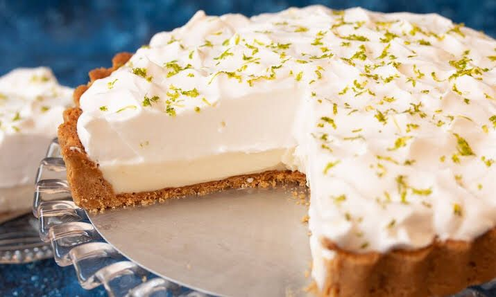

Delícias JB

INGREDIENTES
Massa:
200g de biscoito de maisena
150 de margarina
Recheio:
1 Lata de leite condesado(395g)
1 Caixa de creme de leite (200 g)
Suco de 4 limões
Raspas de 2 limões
Cobertura:
3 ou 4 claras de ovo
3 colheres (sopa) de açúcar
raspas de 2 limões para decorar
MODO DE PREPARO
Massa:
Triture o biscoito de maisena em um liquidificador ou processador.
Junte a margarina e bata mais um pouco.
Despeje a massa em uma forma de fundo removível (27 cm de diâmetro).
Com as mãos, espalhe os biscoitos triturados no fundo e nas laterais da forma, cobrindo toda área de maneira uniforme.
Leve ao forno médio (180° C), preaquecido, por aproximadamente 10 minutos.
Recheio:
Bata todos os ingredientes no liquidificador (exceto as raspas de limão) até obter um creme liso e firme.
Recheie a massa já assada e leve à geladeira por 30 minutos.
Cobertura:
Bata as claras em neve e acrescente o açúcar.
Misture até obter um ponto de suspiro e leve ao forno até dourar.
Desenforme a torta (sem retirar o fundo falso), despeje a cobertura e acrescente as raspas de limão.